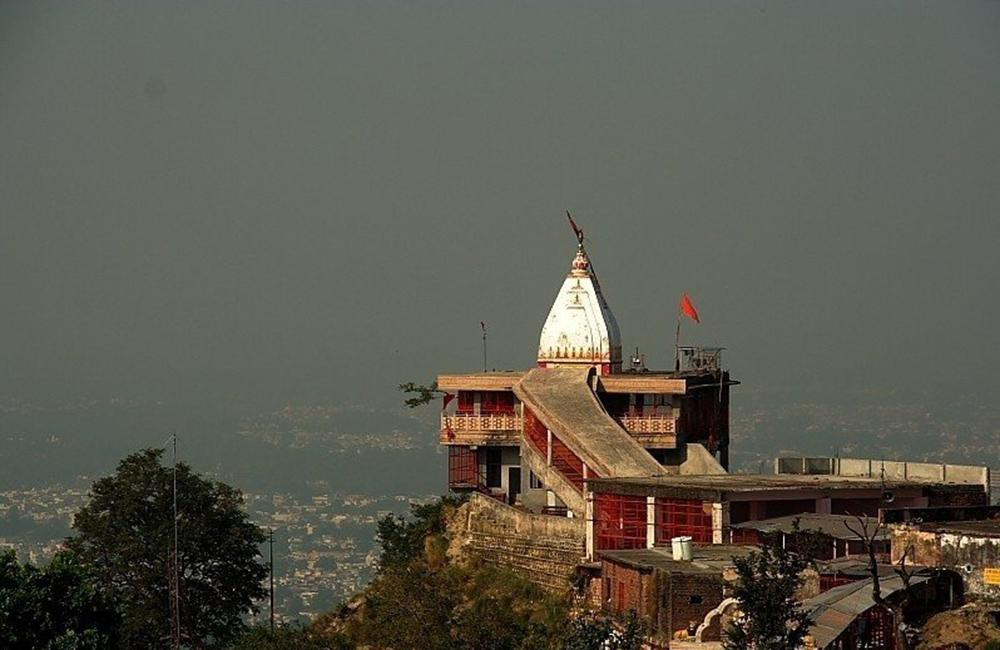
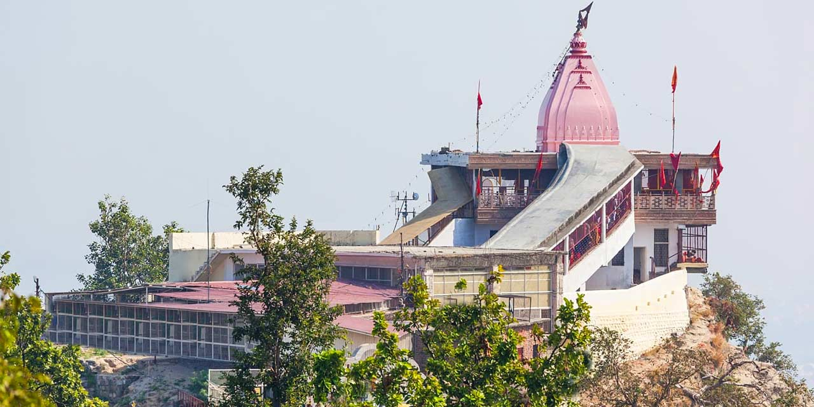
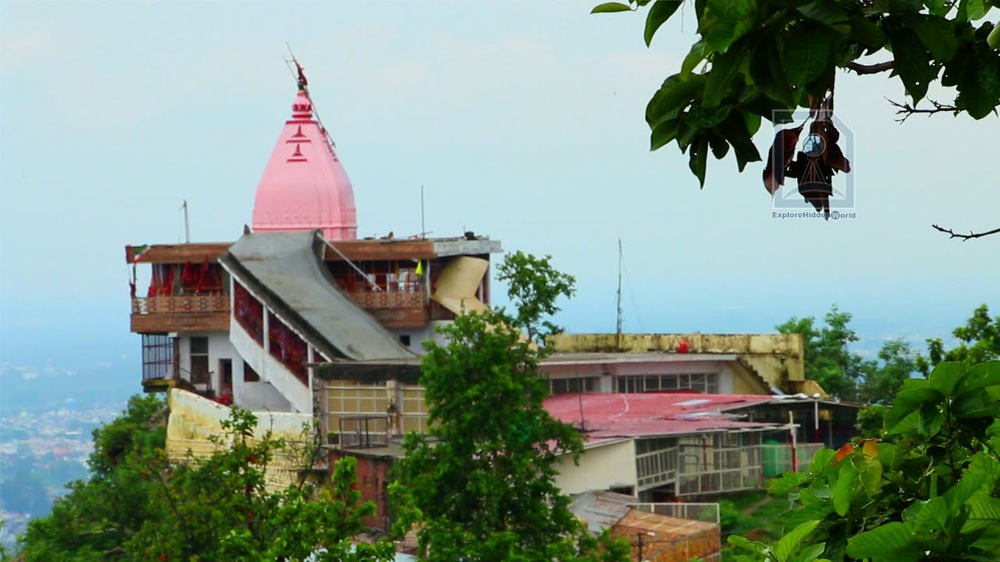
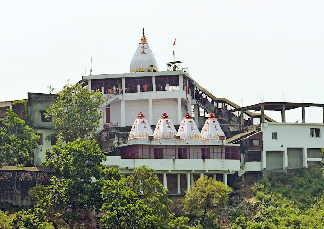
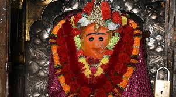

Chandi Devi Temple is one of the most ancient and powerful Siddha Peethas (sacred Shakti shrines) in Haridwar, Uttarakhand, perched atop Neel Parvat (Neel Mountain) in the Shivalik Hills. Dedicated to Goddess Chandi — a fierce incarnation of Goddess Durga/Parvati who vanquished the demons Shumbha and Nishumbha as described in the Devi Mahatmya (Chandi Path) — the temple is believed to house an idol installed by Adi Shankaracharya in the 8th century AD. The current structure was built in 1929 by Raja Suchet Singh of Kashmir, but its spiritual roots trace back over 1,200 years. As a Siddh Peeth, Chandi Devi is revered for granting wishes, protection from evil, and victory over obstacles, drawing devotees who seek her blessings for strength, courage, and fulfillment in the sacred landscape overlooking the Ganges and Haridwar city.
The temple offers breathtaking panoramic views of Haridwar, the flowing Ganga, and the surrounding hills, making it a blend of spiritual potency and natural grandeur. Accessible via a scenic ropeway (Udan Khatola) from the base near Nazibabad Road or a moderate 3–4 km uphill trek from Chandighat, Chandi Devi is often visited alongside Mansa Devi for a complete Haridwar Shakti circuit. The atmosphere peaks during Navratri festivals with special pujas, aartis, and vibrant crowds, evoking the goddess's triumphant energy. In the quiet moments, the site radiates maternal fierceness and grace — a divine reminder that true power lies in surrendering to the protective force of the Mother who slays demons within and without.
October to March for pleasant, cool weather and comfortable ropeway/trek access; peak devotion during Navratri (March–April & September–October) with grand celebrations, decorations, and energy. Temple open ~6–7 AM to 6–7 PM (ropeway timings: 7:00 AM–6:00 PM). Early mornings offer serene darshan and fewer crowds; evenings provide beautiful sunset views over Haridwar. Avoid heavy monsoon (July–September) due to slippery paths and potential ropeway halts.
Darshan of ancient Chandi Devi idol (installed by Adi Shankaracharya), thrilling ropeway ride with sweeping Ganges & city views, scenic trek through hills, evening aarti during Navratri, nearby smaller shrines, and panoramic hilltop vistas — perfect for prayer offerings, photography of Haridwar from above, meditation, and invoking the goddess's protective and victorious energy. Often combined with Mansa Devi Temple for a full Shakti pilgrimage.
Book ropeway tickets early or online (especially Navratri peak; round-trip ~₹200–₹350, combo with Mansa Devi available), wear comfortable shoes for trek or modest clothing for temple, carry water/snacks/layers (hilltop can be windy/cool), watch for monkeys (secure belongings), maintain silence during darshan, no photography inside sanctum, avoid littering in this sacred site, and plan with Har Ki Pauri Ganga Aarti or other Haridwar spots for a complete day of devotion and views.
"On the summit of Neel Parvat, Chandi Devi stands eternal — her sword raised not in wrath, but in fierce love for her children. Every devotee who climbs her hill carries a battle within; here, the Mother slays the demons of doubt, granting not just victory, but the quiet strength to walk through life with her unyielding grace."